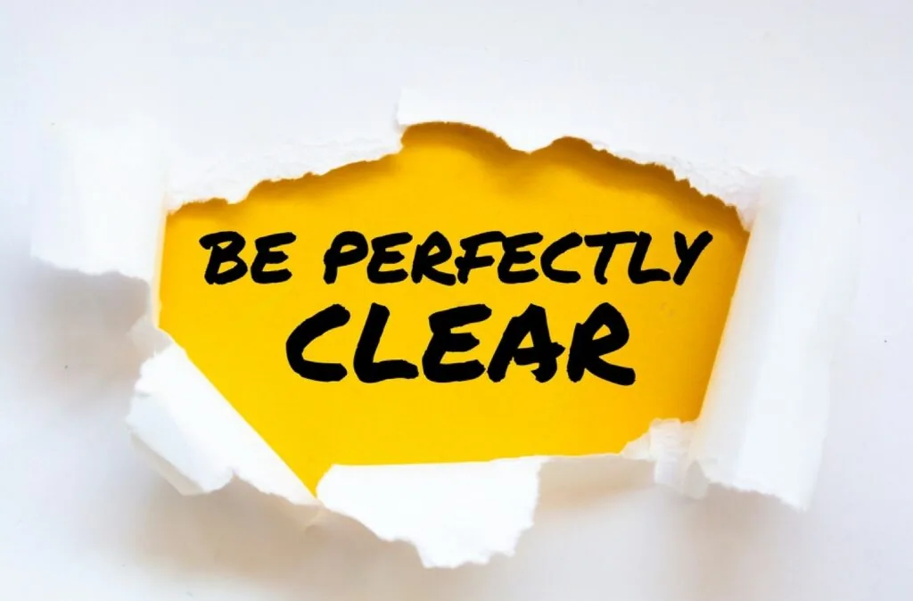

Setting clear and measurable campaign goals.

Advertising campaigns on social media can be an effective way to reach a large audience and promote your business, products, or services. However, it’s important to create effective advertising campaigns in order to maximize your return on investment and achieve your marketing goals. Here are 8 tips to help you create effective advertising campaigns for social media:
- Define your target audience: Before you start creating your advertising campaign, it’s important to have a clear understanding of who you want to reach. This will help you create more targeted and effective ads. Consider factors such as age, gender, location, interests, and behaviors when defining your target audience.
- Set specific goals: It’s also important to have specific goals in mind when creating your advertising campaign. These goals could be related to increasing brand awareness, generating leads, or driving sales. Having clear goals will help you create more focused and effective ads.
- Choose the right social media platform: Different social media platforms have different demographics, so it’s important to choose the right one for your target audience. For example, if you’re targeting younger audiences, you may want to focus on platforms like Instagram and TikTok. If you’re targeting a more professional audience, LinkedIn may be a better fit.
- Use eye-catching visuals: Social media is a very visual platform, so it’s important to use eye-catching visuals in your ads. This could be images, videos, or graphics. Make sure to use high-quality visuals that are relevant to your campaign and capture the attention of your target audience.
- Write compelling ad copy: In addition to using visual elements, it’s also important to write compelling ad copy to grab the attention of your audience. Use clear and concise language and focus on the benefits of your products or services. You should also include a call to action to encourage users to take the desired action, such as visiting your website or making a purchase.
- Use targeting options: Most social media platforms offer targeting options that allow you to reach a specific audience. Use these options to your advantage by targeting users based on factors such as demographics, interests, behaviors, and location. This will help you reach the right people with your ads.
- Test and optimize your ads: It’s important to test and optimize your ads to ensure they are performing well. This may involve testing different visuals, ad copy, or targeting options to see what works best. You can use tools like A/B testing to compare the performance of different ads and make data-driven decisions about which ones to use.
- Monitor and track your results: Finally, it’s important to monitor and track your results to see how your advertising campaign is performing. Most social media platforms have built-in analytics tools that allow you to see how many people are seeing your ads, how many are clicking on them, and how many are converting. Use this data to make informed decisions about your advertising strategy and adjust your campaign as needed.
In conclusion, creating effective advertising campaigns for social media requires careful planning and attention to detail. By following these 8 tips, you can create ads that are targeted, visually appealing, and compelling, and that help you achieve your marketing goals.
Why is important to create effective advertising campaigns for social media?
Creating effective advertising campaigns for social media is important for a number of reasons. First and foremost, social media advertising allows businesses to reach a large and targeted audience in a cost-effective way. With the right advertising campaign, you can effectively promote your products, services, or brand to the people who are most likely to be interested in them.
Another reason why effective advertising campaigns are important is that they can help you achieve specific marketing goals. Whether you’re looking to increase brand awareness, generate leads, or drive sales, a well-planned and executed advertising campaign can help you get there.
Effective advertising campaigns can also help you build trust and credibility with your audience. By creating ads that are relevant, informative, and valuable, you can establish yourself as a trusted and reputable source of information in your industry.
Finally, effective advertising campaigns can help you stand out from the competition. In today’s crowded social media landscape, it can be difficult to get noticed. By creating ads that are unique, creative, and compelling, you can differentiate your business and stand out from the competition.
In conclusion, creating effective advertising campaigns for social media is important for businesses looking to reach a large and targeted audience, achieve specific marketing goals, build trust and credibility, and stand out from the competition. By following best practices and using the right tools and tactics, businesses can create advertising campaigns that are successful and deliver a strong return on investment.